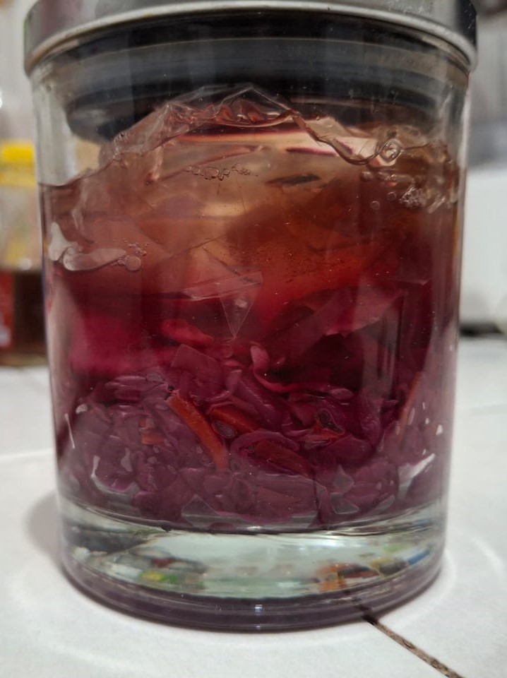
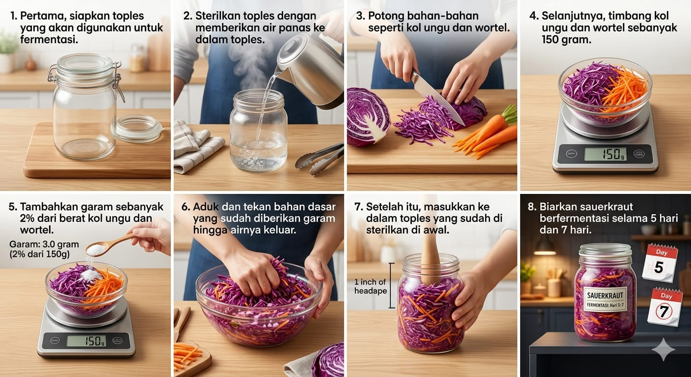

Blog ini bertujuan untuk mengedukasi sesuai dengan penelitian yang telah dilakukan. Blog ini akan membahas banyak tentang sauerkraut. Selain itu, blog ini juga akan membahas bagaimana cara membuat sauerkraut.

Sauerkraut adalah salah satu contoh produk fermentasi yang menggunakan kol putih. Fermentasi sauerkraut menggunakan garam sebagai bahan yang penting dalam proses fermentasi. Sauerkraut menggunakan sistem anaerob, artinya proses fermentasi sauerkraut tidak memerlukan oksigen sedikit pun. Namun, inovasi terjadi maka beberapa sayur mulai digunakan untuk menjadi bahan dasar sauerkraut. Salah satu bahan yang dapat digunakan adalah jenis kol yang lain seperti kol ungu. Sayur lain seperti wortel pun dapat digunakan sebagai bahan dasar sauerkraut.
